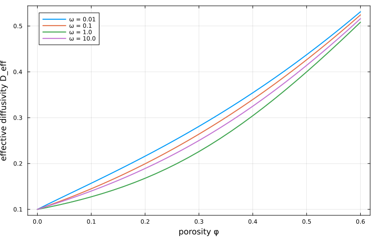
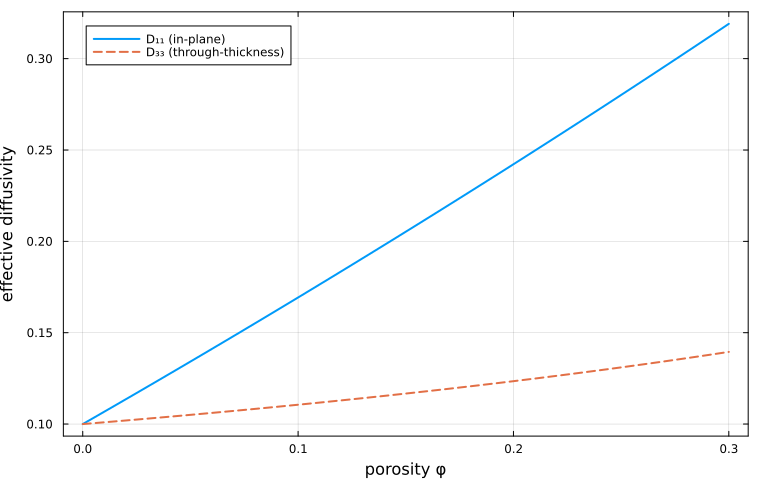

Transport properties
Transport properties — diffusivity, permeability, thermal or electrical conductivity — are described by 2nd-order symmetric tensors. They are homogenized with exactly the same machinery as 4th-order elastic properties: only the property key passed to homogenize changes.
This page is the MeanFieldHom counterpart of the Transport properties tutorial of the Echoes book [42].
Homogenizing a 2nd-order property
A property is stored in each phase under a symbol key — :C for stiffness, :K for conductivity/diffusivity — and selected at homogenization time:
using MeanFieldHom
using TensND
using LinearAlgebra
using Plots
gr() # headless backend; GKSwstype is set to "100" in make.jl
# Isotropic diffusivities: 2nd-order isotropic tensors.
D_solid = TensISO{3}(0.1)
D_pore = TensISO{3}(1.0)
rve = RVE(:SOLID)
add_matrix!(rve, Ellipsoid(1.0, 1.0, 1.0), Dict(:K => D_solid))
add_phase!(
rve, :PORE, Ellipsoid(1.0, 1.0, 0.1), Dict(:K => D_pore);
fraction = 0.2, symmetrize = IsoSymmetrize()
)
D_eff = homogenize(rve, MoriTanaka(), :K)
tr(Array(D_eff)) / 30.19065028014161733TensISO{3}(k) builds the isotropic 2nd-order tensor $k\,\mathbf{1}$; note the single argument, against two ($\alpha, \beta$) for a 4th-order isotropic stiffness.
The scheme is a free parameter, exactly as in elasticity:
for scheme in (Dilute(), MoriTanaka(), SelfConsistent())
D = homogenize(rve, scheme, :K)
println(rpad(string(nameof(typeof(scheme))), 16), tr(Array(D)) / 3)
endDilute 0.18064276801551857
MoriTanaka 0.19065028014161733
SelfConsistent 0.1994431324590776The self-consistent estimate sits above Mori-Tanaka here because the conductive pores percolate in the SC topology, while MT keeps them isolated in a continuous, poorly conductive solid.
Diffusivity of a porous medium
The effective diffusivity of a porous material depends strongly on pore shape, not only on porosity. Flat pores (small aspect ratio $\omega$) are far more efficient at connecting the medium, per unit volume, than spherical ones.
function D_eff_porous(φ, ω; scheme = SelfConsistent())
r = RVE(:SOLID)
add_matrix!(r, Ellipsoid(1.0, 1.0, 1.0), Dict(:K => TensISO{3}(0.1)))
add_phase!(
r, :PORE, Ellipsoid(1.0, 1.0, ω), Dict(:K => TensISO{3}(1.0));
fraction = φ, symmetrize = IsoSymmetrize()
)
return tr(Array(homogenize(r, scheme, :K))) / 3
end
φs = 0.0:0.15:0.6
println(" φ ", join([" ω=$ω" for ω in (0.01, 0.1, 1.0, 10.0)]))
for φ in φs
vals = [D_eff_porous(φ, ω) for ω in (0.01, 0.1, 1.0, 10.0)]
println(rpad(φ, 6), join([rpad(round(v, digits = 4), 8) for v in vals]))
end φ ω=0.01 ω=0.1 ω=1.0 ω=10.0
0.0 0.1 0.1 0.1 0.1
0.15 0.186 0.171 0.1457 0.1632
0.3 0.2811 0.2642 0.2261 0.2502
0.45 0.3945 0.3816 0.3503 0.3679
0.6 0.5312 0.5243 0.5084 0.5161The same sweep, plotted as effective diffusivity against porosity for a range of pore aspect ratios $\omega$:
φ_plot = 0.0:0.02:0.6
plt = plot(;
xlabel = "porosity φ", ylabel = "effective diffusivity D_eff",
legend = :topleft, framestyle = :box, size = (760, 480),
)
for ω in (0.01, 0.1, 1.0, 10.0)
plot!(plt, φ_plot, [D_eff_porous(φ, ω) for φ in φ_plot]; label = "ω = $ω", lw = 2)
end
plt
Flatter pores ($\omega \ll 1$) lift the effective diffusivity far more per unit porosity than spheres ($\omega = 1$) or prolate pores ($\omega > 1$): at a given $\varphi$ the oblate curve sits well above the others, because a thin disc bridges a larger span of the microstructure than a compact inclusion of the same volume.
Two limits are worth checking. At zero porosity every curve must return the solid diffusivity, and at $\omega = 1$ (spherical pores) the self-consistent estimate must reproduce the classical Bruggeman result — the root of
\[\varphi \, \frac{D_p - D}{D_p + 2D} + (1-\varphi) \, \frac{D_s - D}{D_s + 2D} = 0 .\]
# Plain bisection — no extra dependency needed.
function bruggeman(φ; Ds = 0.1, Dp = 1.0)
f(D) = φ * (Dp - D) / (Dp + 2D) + (1 - φ) * (Ds - D) / (Ds + 2D)
lo, hi = 1.0e-12, 10.0
for _ in 1:200
mid = (lo + hi) / 2
f(lo) * f(mid) <= 0 ? (hi = mid) : (lo = mid)
end
return (lo + hi) / 2
end
for φ in (0.2, 0.4, 0.6)
sc = D_eff_porous(φ, 1.0)
br = bruggeman(φ)
println("φ = ", φ, " SC = ", round(sc, digits = 8),
" Bruggeman = ", round(br, digits = 8),
" |Δ| = ", round(abs(sc - br), sigdigits = 3))
endφ = 0.2 SC = 0.16786262 Bruggeman = 0.16786262 |Δ| = 2.27e-10
φ = 0.4 SC = 0.30430749 Bruggeman = 0.30430749 |Δ| = 3.25e-10
φ = 0.6 SC = 0.50835623 Bruggeman = 0.50835623 |Δ| = 2.3e-10The two agree to $3\times10^{-10}$, i.e. to the tolerance of the self-consistent fixed point — a non-trivial check that the 2nd-order SC scheme reproduces the classical effective-medium result for spherical inclusions.
Anisotropy induced by oriented pores
If the pores are not re-oriented isotropically, the effective diffusivity inherits their symmetry. Dropping symmetrize = IsoSymmetrize() leaves all pores aligned on $e_3$, and the effective tensor becomes transversely isotropic:
r = RVE(:SOLID)
add_matrix!(r, Ellipsoid(1.0, 1.0, 1.0), Dict(:K => TensISO{3}(0.1)))
add_phase!(
r, :PORE, Ellipsoid(1.0, 1.0, 0.05), Dict(:K => TensISO{3}(1.0));
fraction = 0.15
)
D_aniso = Array(homogenize(r, MoriTanaka(), :K))
(D_11 = D_aniso[1, 1], D_33 = D_aniso[3, 3])(D_11 = 0.20527498300671998, D_33 = 0.11669699311419938)The oblate pores lie in the $(e_1, e_2)$ plane, so they short-circuit in-plane transport ($D_{11}$ large) while barely helping through-thickness transport ($D_{33}$ close to the solid value).
Sweeping the porosity makes the induced anisotropy explicit — the in-plane and through-thickness diagonal components fan apart as $\varphi$ grows:
function D_aniso_components(φ; ω = 0.05)
r = RVE(:SOLID)
add_matrix!(r, Ellipsoid(1.0, 1.0, 1.0), Dict(:K => TensISO{3}(0.1)))
add_phase!(
r, :PORE, Ellipsoid(1.0, 1.0, ω), Dict(:K => TensISO{3}(1.0));
fraction = φ
)
D = Array(homogenize(r, MoriTanaka(), :K))
return D[1, 1], D[3, 3]
end
φ_plot = 0.0:0.01:0.3
D11 = [D_aniso_components(φ)[1] for φ in φ_plot]
D33 = [D_aniso_components(φ)[2] for φ in φ_plot]
plt2 = plot(;
xlabel = "porosity φ", ylabel = "effective diffusivity",
legend = :topleft, framestyle = :box, size = (760, 480),
)
plot!(plt2, φ_plot, D11; label = "D₁₁ (in-plane)", lw = 2)
plot!(plt2, φ_plot, D33; label = "D₃₃ (through-thickness)", lw = 2, ls = :dash)
plt2
Cross-property coupling
Because a single RVE carries several property keys at once, the same microstructure can be homogenized for stiffness and for transport without being rebuilt — which is the basis of cross-property correlations [25]:
r2 = RVE(:SOLID)
add_matrix!(
r2, Ellipsoid(1.0, 1.0, 1.0),
Dict(:C => TensISO{3}(30.0, 12.0), :K => TensISO{3}(0.1))
)
add_phase!(
r2, :PORE, Ellipsoid(1.0, 1.0, 0.1),
Dict(:C => TensISO{3}(1.0e-9, 1.0e-9), :K => TensISO{3}(1.0));
fraction = 0.15, symmetrize = IsoSymmetrize()
)
C_eff = homogenize(r2, MoriTanaka(), :C)
D_eff2 = homogenize(r2, MoriTanaka(), :K)
(bulk = k_mu(C_eff)[1], diffusivity = tr(Array(D_eff2)) / 3)(bulk = 4.07913658548325, diffusivity = 0.16594191441863304)